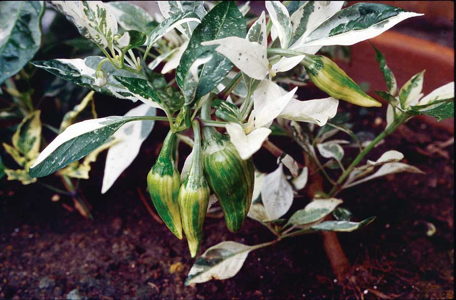
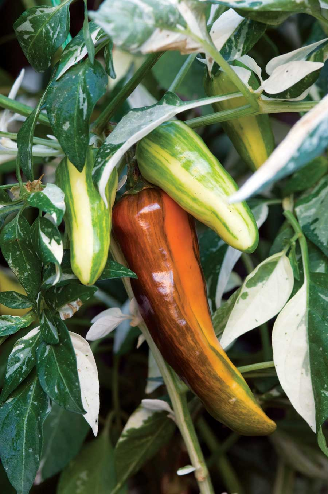
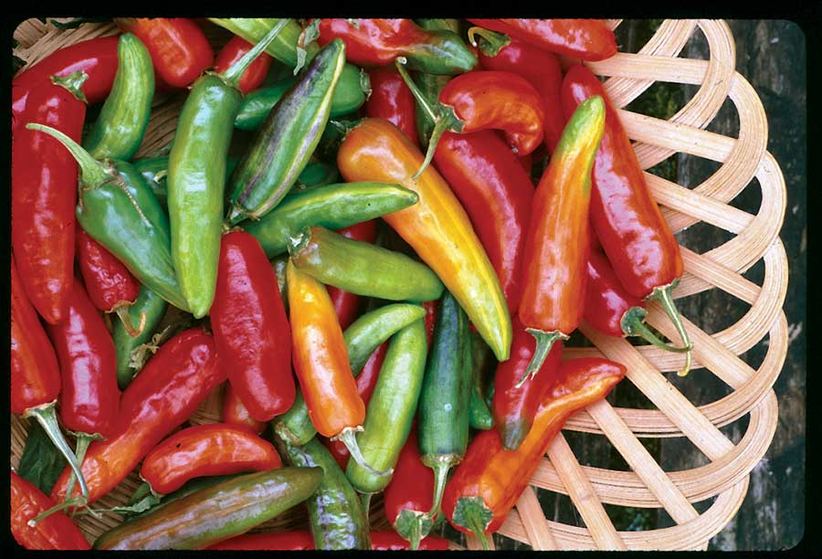
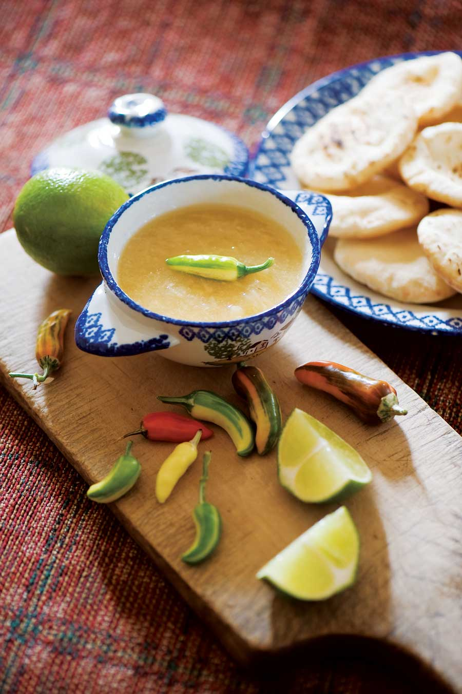

The story of the ‘Fish’ pepper is about bee stings and black history, and a delicious hot white sauce. All the ‘Fish’ peppers now sold by seed companies trace back to seed I shared many years ago through Seed Savers Exchange. From my grandfather’s little seed jar, this unique variegated-leaf pepper spread to the world of pepper aficionados and, because of its ornamental character, to landscape gardeners.
My grandfather acquired the seed in the 1940s from Horace Pippin, a black folk painter in West Chester, Pa. Mr. Pippin suffered from a war injury that he referred to as “the miseries.” Because the miseries were of an arthritic nature, he would beg my grandfather to let him counter the pain with honeybee stings. My grandfather’s bee hives were his pride and joy, and the idea of killing bees (honeybees die shortly after stinging) in the name of an old wives’ remedy did not sit well with him.
So to humor my grandfather and “pay” for the dead bees, Pippin would bring seeds, sometimes wonderfully rare varieties from old-time gardeners in his far-flung network of friends stretching from Philadelphia to Baltimore and beyond. The ‘Fish’ peppers came from Baltimore, where they had been employed by black caterers to make white paprika for the cream sauces then popular with fish and shellfish cookery. In terms of heat, they are like cayenne, but are more mellow when cooked. The white pods were also used in soups where red peppers would have created a muddied appearance. As far as Mr. Pippin could tell, these peppers had been in use since the 19th century, one of those secret heirloom ingredients that never showed up in cookbooks. They were simply part of oral tradition.
Today, ‘Fish’ peppers are popular for their ornamental qualities and because the 2-foot plants are easy to grow in containers. The leaves, with their patches of white and gray-green, derive their unique appearance from the same recessive genes that cause albinism. This results in a curious combination of striped pod colors, from white to red. ‘Fish’ peppers make perfect accent plants in the landscape. Of course, they’re also grown for cooking, and are perfect for drying into wonderful hot-hot chili powder.
Some seed companies are now selling “off” seeds, with leaves that are not multi-colored enough and pods of the wrong shape. So stick to the sources listed in the Mother Earth News Seed and Plant Finder. The pods should be short, pendant and pointed, ideally about 1 1⁄2 to 2 inches long.
Saving seed from ‘Fish’ peppers is both easy and complicated. Seed must come from fully ripened fruit and from plants that are not growing near other Capsicum annuums (common peppers such as bell peppers, cayennes, etc.). The reason for the latter is that as insects and wind move pollen around, the recessive gene in ‘Fish’ peppers will spread to other peppers in the area. So you may end up with variegated bell peppers and who knows what else!
Take the seeds out of the ripe pods and dry them on paper towels. After about two weeks they should be dry enough to put into envelopes, date and label, and then store in airtight jars. My grandfather froze his seeds and you can, too - frozen seeds will last at least 20 years, perhaps longer. At ambient temperatures, allow no more than six years.
When you go to plant your ‘Fish’ pepper seeds, start them in flats the way you would with tomatoes, but earlier (mid-January is ideal). You’ll get seedlings that are green and some that are white. Discard the white ones, which are pure albino and will not grow because they cannot photosynthesize; they’re botanical dead ends.
Transplant your seedlings to pots when they have three or four leaves. You can’t tell at this point which will have the most variegated leaves, but once they’re in the ground and growing, you’ll see a difference. I always overplant and pull out the least attractive plants. This is called “rouging,” and you have to be a little hardhearted.
Is there a distinctive flavor? ‘Fish’ peppers derive from cayennes, so they have none of the smokiness of habaneros or the fruity quality of some Andean peppers, such as ‘Aji Límo.’ On the other hand, white ‘Fish’ peppers have a subtle sweetness that is enhanced with lime juice, or better yet, pineapple. They’re also very hot, so the combination is quite pleasant, especially when the peppers are served with fish and shellfish. You can get quite creative with ‘Fish’ peppers once you learn to control them, which was doubtlessly one of the first things one learned as a black caterer in Old Baltimore.
To honor its culinary tradition, I have developed a white hot salsa with ‘Fish’ peppers (see recipe below). The color is of course unusual, the flavor is unique, and do wear rubber gloves when making it!
The white bell pepper variety called for in this recipe was developed specifically for its white color, and is available in many supermarkets with specialty peppers. This is an excellent salsa for fish or shellfish, and also ceviche (a chilled mixture of fish marinated in lime juice). It can be frozen for later use.
1 pound white bell peppers
4 ounces white ‘Fish’ peppers
1 large cooking apple (about 8 ounces), pared, cored and chopped
1 1⁄2 cups white wine vinegar
1 cup sugar
4 cloves garlic
1 cup fresh pineapple, chopped (or substitute 1/2 cup lime juice)
1 1⁄2 tbsp salt
Seed and chop the peppers, and put them in a large, non-reactive (avoid aluminum and copper) pan. Add the apple, vinegar, sugar, garlic and pineapple (or lime). Cover and simmer over medium heat for 25 to 30 minutes or until the peppers are soft. Purée to a creamy consistency and return to the pan. Bring to a gentle boil. Stir in the salt, and pour into hot sterilized jars. Seal and store in a dark, cool closet until needed, or freeze. Yields 5 cups.
Heirloom Vegetable Gardening: A Master Gardener’s Guide to Planting, Seed Saving and Cultural History by William Woys Weaver, now on CD. If you want to explore the fabulous flavors, fascinating history and amazing diversity of vegetables, this is the book to start with. Food historian and Mother Earth News contributing editor Will Weaver profiles 280 heirloom varieties, with authoritative growing advice and incredible recipes. First published in 1997, Heirloom Vegetable Gardening has since been out of print, with used copies selling online for as much as $300. We are proud to present the original text, with color photos, as a digital book on CD-ROM.
|
 WILBUR ZIMMERMAN Showy variegated ‘Fish’ peppers make a splash in the garden. |
 ROB CARDILLO Heirloom ‘Fish’ peppers |
 DAVID CAVAGNARO If you love spicy foods, try drying and grinding ‘Fish’ peppers into a wonderfully hot paprika. |
|
 ROB CARDILLO White Hot Fish Pepper Salsa |
|
|